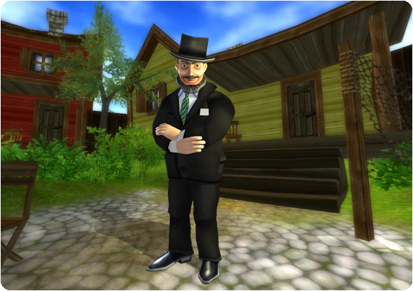

Hi all!
Here is this week's exciting update!
New quests:
The exciting story continues! Talk to Mayor Klaus in Cape West Fishing Village and see what he wants. Remember to pay close attention to the clues you get, it may help you in the future...

New decoration shop:
A new decoration shop has been opened in West Cape Fishing Village with new great decorations for your horse!
New clothes:
A new batch of clothes has arrived to Silverglade Village, Cape West Fishing Village and Valedale. This batch includes more western clothes!